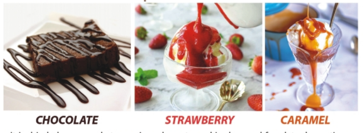
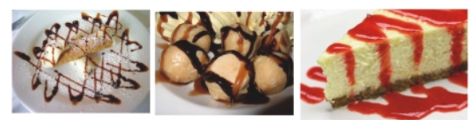

PRODUCTS
We manufacture different baking sector products which contains Whipping Creams , Chocolate spreads , Chocolate slabs , Chocolate Compound, Chocolate chips, topping Sauces, & Food COlours
WHIPY WHIP
Whipy Whip has a light, creamy texture and a rich flavor that our customers will love. Piped decorations won't weep-they'll stay sable and sharp. Basic or elaborate designs are easier and faster because Whipy Whip flows so easily from the pastry bag and it blends easily with flavors and colors without fading or running. For the ultimate i convenience and consistency.
Packings :
- 1kg
- 500Gm
- 250Gm
WHIPY WHIP NATURAL DAIRY
hipy Whip has a light, creamy texture and a rich flavor that our customers will love. Piped decorations won't weep-they'll stay sable and sharp. Basic or elaborate designs are easier and faster because Whipy Whip flows so easily from the pastry bag and it blends easily with flavors and colors without fading or running. For the ultimate i convenience and consistency.
Packings :
- 1Kg
- 500Gm
WHIPY WHIP STRAWBERRY
hipy Whip has a light, creamy texture and a rich flavor that our customers will love. Piped decorations won't weep-they'll stay sable and sharp. Basic or elaborate designs are easier and faster because Whipy Whip flows so easily from the pastry bag and it blends easily with flavors and colors without fading or running. For the ultimate i convenience and consistency.
- 1Kg
- 500Gm
PRIME Whipping Cream
Prime Whipping Cream is another leading whip cream of Milkyz Food providing mouth-watering flavour to the desserts. Its rich consistency enables ease of working. Also arranges for delightful taste to the food merging with different pleasant flavours.
Packings :
- 1kg (Box)
- 1Kg (pouch)
HAPPY WHIP CREAM
Happy cream is a quality product that enriches tastes of the food with its widely rich consistency. Putting all the flavors to the food, a happy cream combines efficiently into the flavours and different colour types.
Packings :
- 1Kg
CHOCO HEZE
Choco Heze, the original hazelnut spread, is a combination of roasted hazelnuts, skim milk, and cocoa with a creamy consistency and a chocolate taste with a hint of roasted nut flavours. Delicious and easy for a quick breakfast or after-school snack, it can be spread on bread, bagels, crackers, or croissants and enjoyed with a glass of milk or used as a dip for slices of bananas, apples, or strawberries. Substitute Chocoheze in recipes and discover a whole new taste sensation.
Packings :
- 4Kg
- 3Kg
- 1Kg
- 650Gm
- 350Gm
- 180Gm
- 25gm

ROYAL CHOCOLATE COMPOUND
Royal Dark Chocolate is a chocolate without no added milk solid. The basic ingredients are cocoa beans, sugar, an emuslsifier like soy lecithin to preserve texture, and flavorings such as vanilla. The more cocoa and less sugar dark chocolate has, the more bitter it will taste and a small amount is considered a healthful snack. It can be chopped, ground, shaved, or melted and is preffered type of chocolate for baking and melting for a variety of desserts. You can eat dark chocolate straight out of the package without preparation or use it in recipes.
- 2Kg

DARK CHOCOLATE SLAB
Dark chocolate is a chocolate without no added milk solids. the basic ingredients are cocoa beans, sugar, an emuslsifier like soylecithin to preserve texture, and flavorings such as vanilla. The more cocoa and less sugar dark chocolate has, the more bitter it will taste and a small amount is cnsidered a healthful snack. The flavor also makes it a preffered type of chocolate for baking and melting for a variety of desserts.
Packings :
- 2Kg
- 1Kg
- 500Gm
- 250Gm

WHITE CHOCOLATE SLAB
White Chocolate is a chocolate confection, pale ivory in color, made from cocoa butter, sugar, milk solids. Ingredients included in white chocolate, such as, cocoa butter and milk make it fattier then other type of chocolate. It is solid at room temperature 25°C (77°F) because the melting point of cocoa butter, the only cocoa bean componenet of white chocolate is 35°C (95°F). The flavor also makes it a preffered type of chocolate for baking and melting for a variety of desserts.
Packings :
- 2Kg
- 1Kg
- 500Gm
- 250Gm
MILK CHOCOLATE SLAB
Milk Chocolate is a solid chocolate confectionery containing cocoa, sugar, and milk. Milm chocolate is usually amalgamated with with the milk that's why it contains some amount of the fat in it to make it milky. The most popular form of chocolate in many countries, milk chocolate was originally sold solely as a chocolate bar but is now available in a variety of forms. The flavor also makes it a preffered type of chocolate for baking an melting for a variety of desserts.
Packings :
- 2Kg
- 1Kg
- 500Gm
- 250Gm
CHOCO HOUSE PREMIUM CHOCOLATE DROP
Chocolate chips or chocolate morsels are small chunks of sweetened chocolate, used as an ingredients in a number of desserts (notably chocolate chip cookies and muffin), in trail mix and less commonly in some breakfast foods such as pancakes. They are often manufactured as teardrop-shaped valoumes with flat circular bases; They are available in various.
Flavors :
- White
- Dark
Packings :
- 1Kg
ROYAL TOPPING SAUCE
Royal Decor Sauce can be used on many desserts such as cake, cheesecakes, pound cakes, ice cream, Pastries, and many more.
It is drizzled or poured atop various desserts, and is also used for plate decortions. Desserts sauce adds flavors, moisture, texture and color to desserts, may be cooked or uncooked, and is sometimes prepared as a hard sauce with the addition of alcoholic beverages. It is used in various manners to add flavor to and enhance the visual presentation of desserts.
Packings :
- 750Gm
- 350Gm
Flavors :
- Chocolate
- Strawberry
- Caramel

LIQUID FOOD COLOURS
Food coloring is also known as artificial color. It is added to food and drinks to create a specific appereance. Food colors are prevalent in our daily life and are even in foods and drinks we wouldn't expect. They're used to make the orange color of oranges brighter and more uniform, to create the brown hues in colas, and blue dye is added marshmallows to make htem, strangely, white! Of course, there are the obvious uses - to decorate a cake or cupcakes, candy(think M&Ms and Skittles) and the countless multi-colored foods and drinks we're so accustomed to seeing. They're in so many foods.
Packings :
- 120ml
- 35ml
- 18ml
Shades :
- Red
- Green
- Blue
- Yellow
- Black
- White
- Pink
- Brown
- Purple
- Orange
ROYAL ICING GEL COLOR
You can tint your cake batter and icing almost any shade with this set of 09 Royal icing colors. This concentrated gel-based formula gives your batter, buttercream or royal icing a beautiful hue without thinning it out, so color away! Icing colors add color to cake batter, buttercream frosting or royal icing without changing the consistency. icing colors can be mixed to create beautifully customized shades Great for beginning and experience cake decorators.
Shadess :
- Spring Green
- Deep Purple
- Deep Red
- Black
- Lemon Yellow
- Deep Blue
- Orange
- Brown
- Rose Pink
Packings :
- 28ml